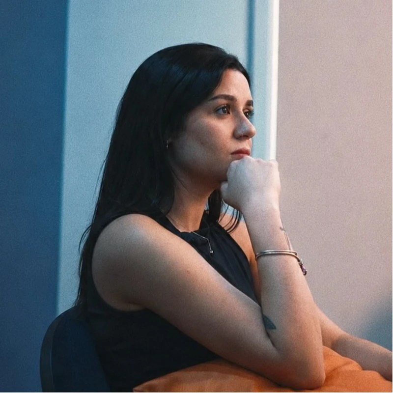

Faturamento recebido
R$446mil
Closer Sênior High Ticket de Vendas Consultivas
De abril a novembro de 2026, fechei 71 vendas e R$ 446 mil em pagamentos recebidos. Os mentores que coloquei na plataforma já somam mais de 1.100 alunos.

Na Tutory, atuo na linha de frente do maior ecossistema educacional do Brasil, transformando o conhecimento de especialistas em negócios de escala. Trago a experiência de gestão geral e comercial em grandes unidades de ensino, como o CNA.
Fechamento de mentorias de alto valor, da sessão estratégica ao contrato.
Liderança de times comerciais e pedagógicos de alta performance.
Scrum (PSM II) e Lean Six Sigma Green Belt aplicados a processos, entregas e KPIs.
Da sala de aula à coordenação, com a experiência do aluno e do mentor no centro.
Clique em uma barra para ver os cargos.
Na linha de frente do maior ecossistema educacional do Brasil, transformo o conhecimento de especialistas em negócios de escala, com metodologias de alto impacto e atendimento personalizado. Meu foco é o sucesso do mentor.
Além do fechamento, dou consultoria aos mentores para que vendam a própria mentoria e para estruturá-la de ponta a ponta: posicionamento, marketing, identidade visual e lançamento.
Assumi a gestão geral e comercial da unidade e implantei uma segunda franquia, que também passei a gerir. Defini metas, implementei KPIs e liderei projetos com metodologias ágeis (Scrum e Lean), da contratação e do treinamento das equipes à criação das diretrizes institucionais. O resultado foi uma operação mais eficiente, com clientes mais satisfeitos e mais renovações. CNA e Ctrl+Play passaram a operar como uma só marca, a CNA+.
Como Coordenadora Pedagógica de duas unidades, otimizei processos e capacitei as equipes com planos de ação baseados em dados. Implementei controles automatizados que deram mais eficiência pedagógica, financeira e administrativa e levaram a rematrícula e o reingresso a crescer 70%. Antes, como professora bilíngue, dei aulas para várias faixas etárias com metodologia multinível.